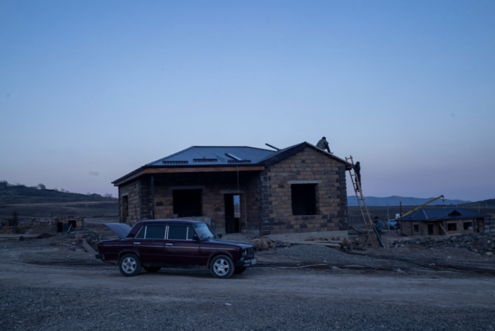
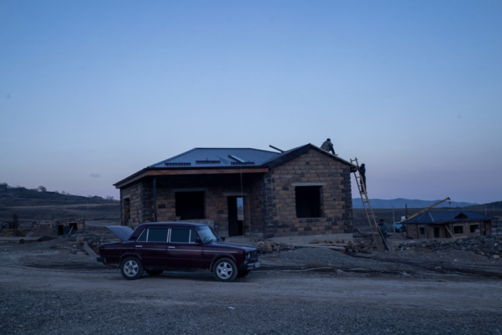
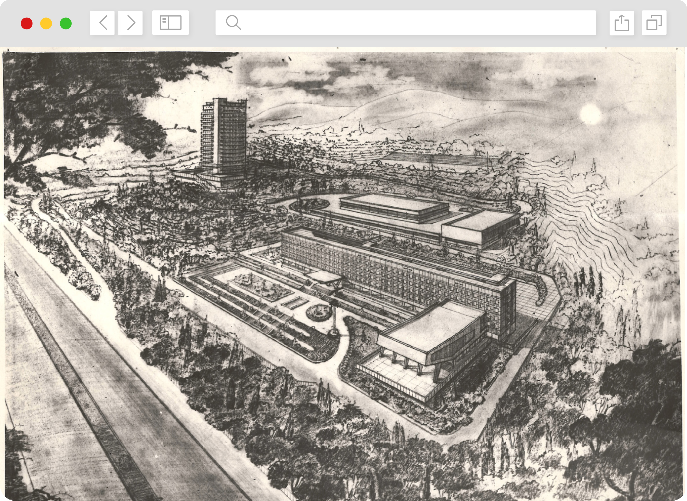
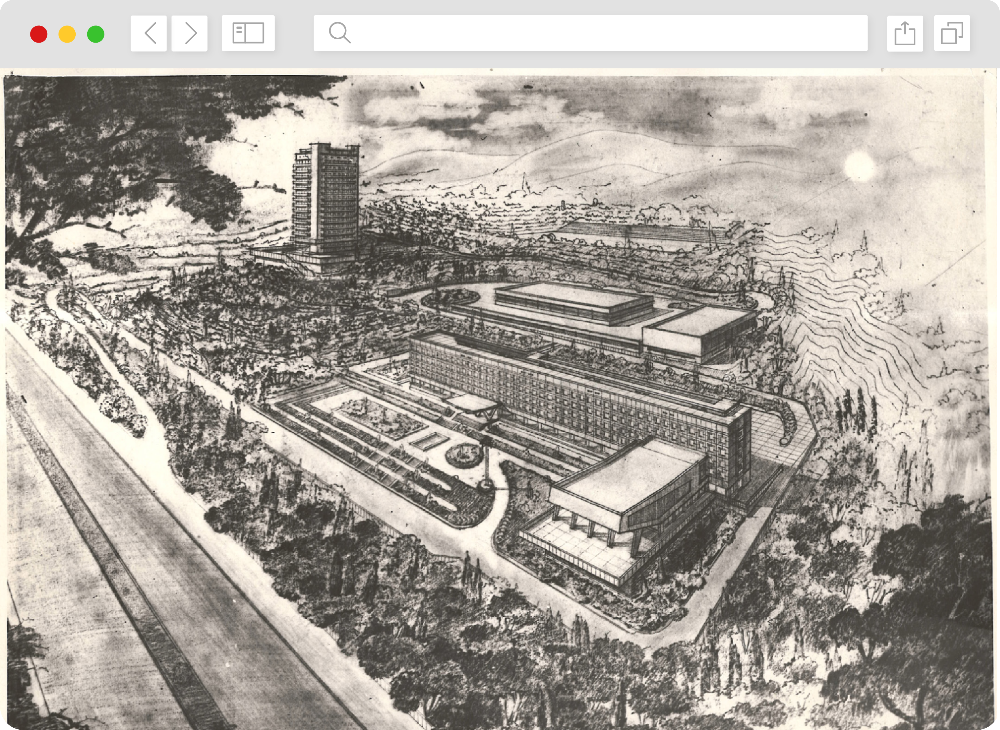

ARM
ENG AZ GE
Պատմություններ տեղահանումների մասին.
երեք սերունդների ճակատագիրը, տասնամյակների հակամարտությունից հետո
Հարավային Կովկասում հակամարտությունն առնչվում է երեք սերունդների.
Աբխազիայի, Լեռնային Ղարաբաղի և Հարավային Օսիայի շուրջ ծավալված
տարածքային վեճերի պատճառով, վերջին 30 տարիների ընթացքում, Հայաստանից,
Ադրբեջանից և Վրաստանից տեղահանվել են հարյուր հազարավոր մարդիկ:
Յուրաքանչյուր հակամարտություն բնորոշվում է իր յուրահատուկ
ողբերգությունով․ երեք երկրներից տեղահանվածների կյանքը ձևավորվել է
իրենց համայնքի քաղաքականության, մշակույթի և հասարակության կողմից: Այս
նախագիծն ուսումնասիրում է տեղահանության հիմքում ընկած պատմությունները.
մարդկանց ճակատագրերը, ովքեր ստիպված են եղել լքել իրենց տները, և այն
կառավարությունների, քաղաքների և գյուղերի արձագանքը, որտեղ նրանք
ապաստան են գտել.
տեսնել ավելին

 

 
